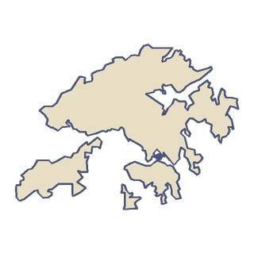

Asia
Hong Kong
Hong Kong adalah daerah administratif khusus China, di pantai selatan tempat Sungai Mutiara bertemu laut. Wilayahnya sebuah semenanjung dan lebih dari 250 pulau, dan sebagian besar daratannya berupa bukit hijau dan taman negara.
“Aku akan melambai pada pesawat-pesawat dari atap di Kowloon.”
- Sampai 1998, pesawat yang mendarat di Bandara Kai Tak lama berbelok tajam rendah di atas atap-atap Kowloon.
- Bandara baru Hong Kong dibangun di Chek Lap Kok, pulau yang diratakan dan diperluas untuk menampung landasan.

1 kota di game ini
Terbang di atas Hong Kong.
-


Hong Kong
Menara Bank of China
Master Neon dan Bajak Laut Sungai Mutiara
Dunia